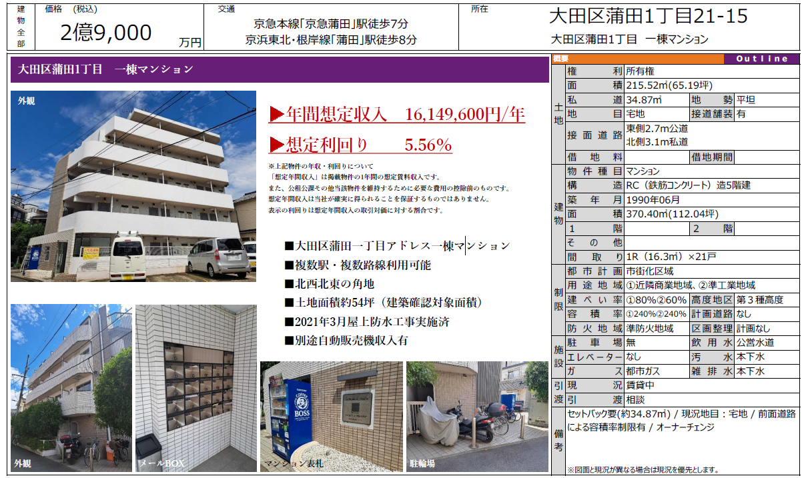
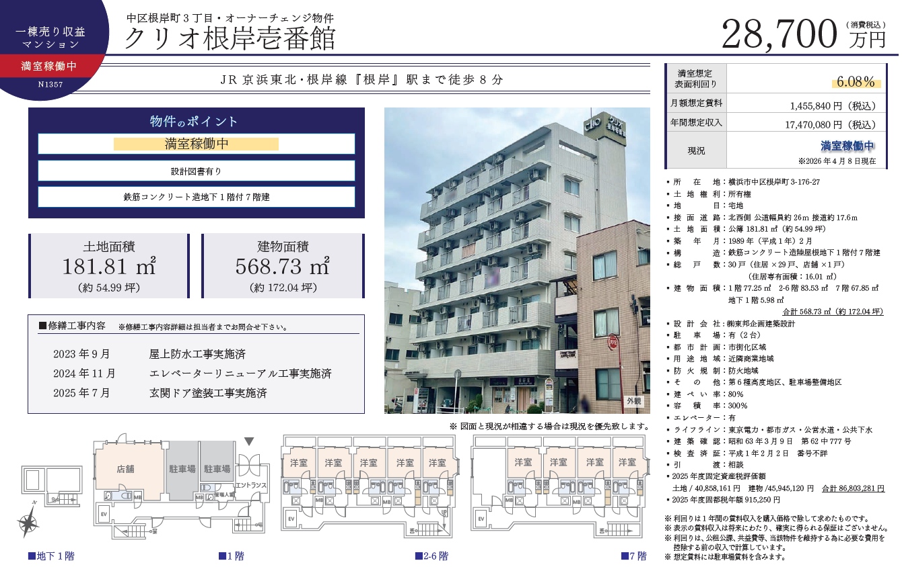
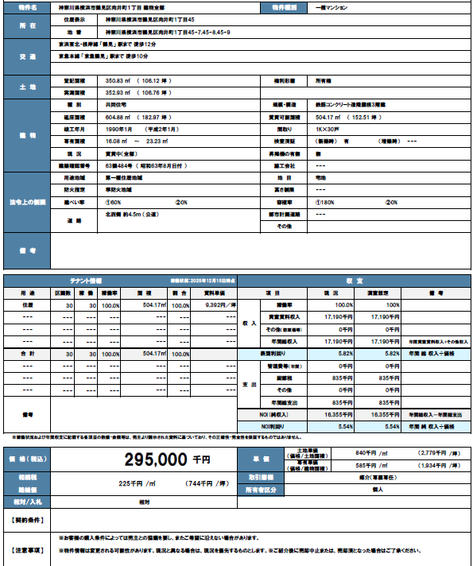
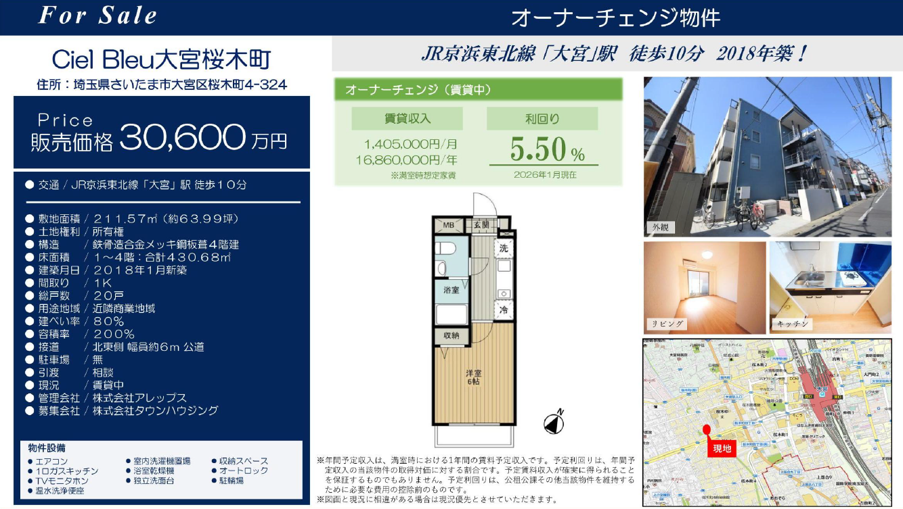
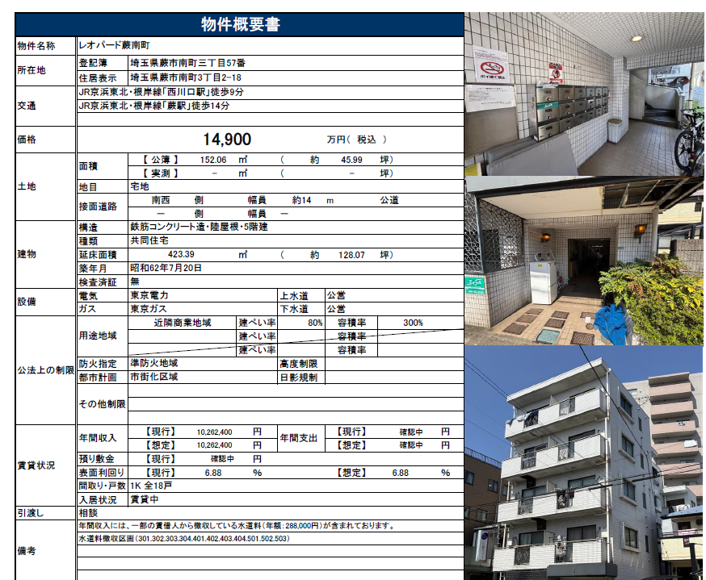
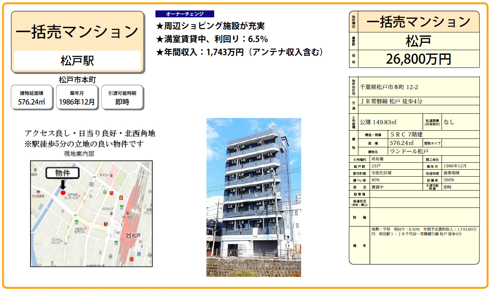
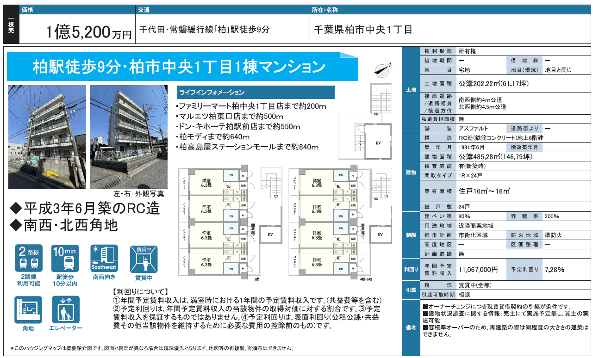
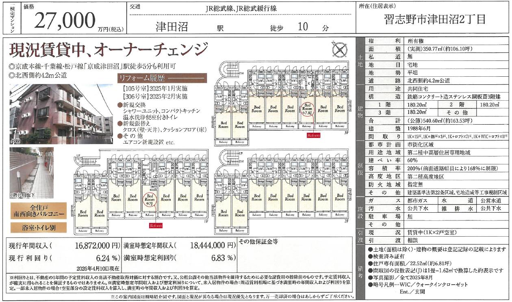
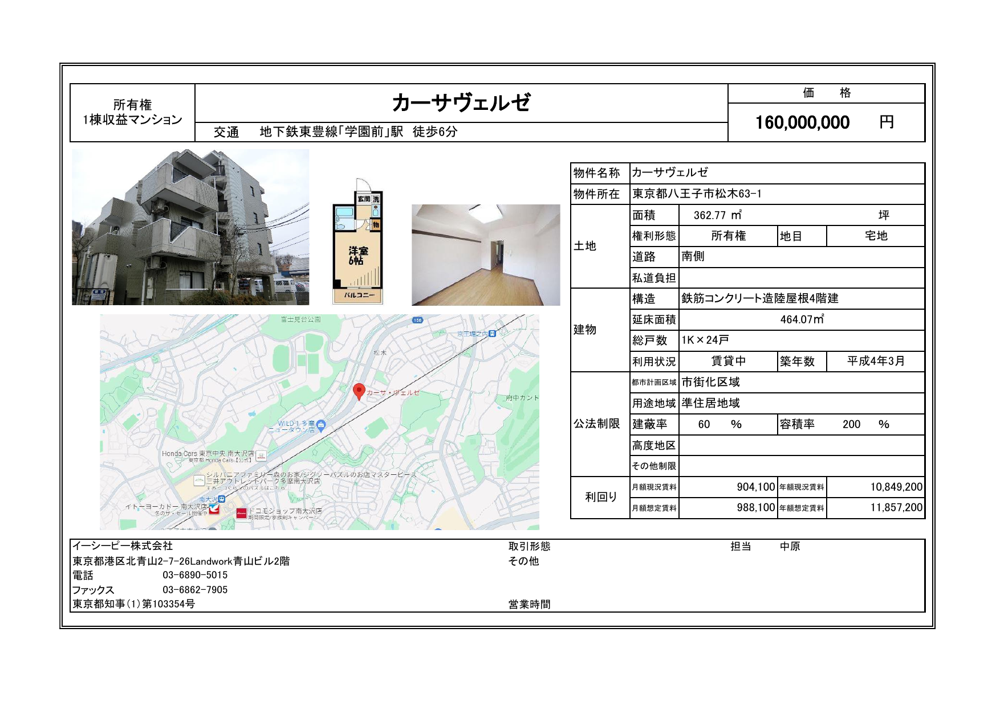

利回り重視
柏中央、蕨南町、津田沼は6%台後半から7%台の表示で、収益性を前面に検討しやすい候補です。
Tokyo / Kanagawa / Saitama / Chiba
京浜東北線、常磐線、総武線沿線を中心に、資料内の9物件を価格帯・想定利回り・築年数・駅距離で比較できるようにまとめました。
利回りだけでなく、駅距離、築年、稼働状況、修繕履歴を合わせて並べています。
柏中央、蕨南町、津田沼は6%台後半から7%台の表示で、収益性を前面に検討しやすい候補です。
蒲田、大宮、根岸は主要駅や複数路線へのアクセスを打ち出しており、出口や賃貸需要の説明がしやすい物件です。
満室稼働中、賃貸中、修繕履歴ありの表記がある物件は、初回打ち合わせで運営状況を深掘りすると判断が早まります。
各カードから元資料画像へ移動できます。価格と利回りは資料記載値を優先しています。

京浜東北線 / 東京京急蒲田 徒歩7分 / 蒲田 徒歩8分

京浜東北線 / 神奈川横浜市中区根岸町 / 根岸 徒歩8分

京浜東北線 / 神奈川尻手 徒歩12分 / 鶴見 徒歩10分

京浜東北線 / 埼玉さいたま市大宮区桜木町 / 大宮 徒歩10分

京浜東北線 / 埼玉西川口 徒歩5分 / 蕨 徒歩14分

常磐線 / 千葉松戸市本町 / 松戸 徒歩4分

常磐線 / 千葉柏 徒歩9分

総武線 / 千葉津田沼 徒歩10分

東京都 / 八王子八王子市松木 / 学園前 徒歩6分表記
打ち合わせでは、利回り上位と駅近・築浅の軸で優先順位を決めると進めやすいです。
| 物件 | エリア | 駅距離 | 価格 | 利回り | 築年 | 戸数 | メモ |
|---|---|---|---|---|---|---|---|
| 柏市中央1丁目 | 千葉県柏市 | 柏9分 | 1.52億円 | 7.28% | 1991年 | 24戸 | 高利回り、角地、EVあり |
| カーサヴェルゼ | 東京都八王子市 | 学園前6分表記 | 1.60億円 | 想定7.41% | 1992年 | 24戸 | 交通表記の整合確認が必要 |
| レオパード蕨南町 | 埼玉県蕨市 | 西川口5分 | 1.49億円 | 6.88% | 1987年 | 18戸 | 駅近、低めの価格帯 |
| ランドール松戸 | 千葉県松戸市 | 松戸4分 | 2.68億円 | 6.50% | 1986年 | 25戸 | 駅近、アンテナ収入含む |
| 津田沼2丁目 | 千葉県習志野市 | 津田沼10分 | 2.70億円 | 6.24% | 1988年 | 資料確認 | 満室想定6.83% |
| クリオ根岸壱番館 | 神奈川県横浜市 | 根岸8分 | 2.87億円 | 6.08% | 1989年 | 30戸 | 満室稼働、修繕履歴あり |
| 尻手1丁目 | 神奈川県横浜市 | 尻手12分 | 2.95億円 | 5.82% | 1990年 | 30戸 | 満室稼働、RC造3階建 |
| 蒲田1丁目 | 東京都大田区 | 蒲田8分 | 2.90億円 | 5.56% | 1990年 | 21戸 | 複数路線、角地、自販機収入 |
| Ciel Bleu大宮桜木町 | 埼玉県さいたま市 | 大宮10分 | 3.06億円 | 5.50% | 2018年 | 20戸 | 築浅、大宮駅徒歩圏 |
注: カーサヴェルゼは資料内の住所と交通表記に確認余地があります。利回りは年額想定賃料11,857,200円÷価格160,000,000円で概算しています。
細かな法令、面積、備考、図面は元資料で確認できます。